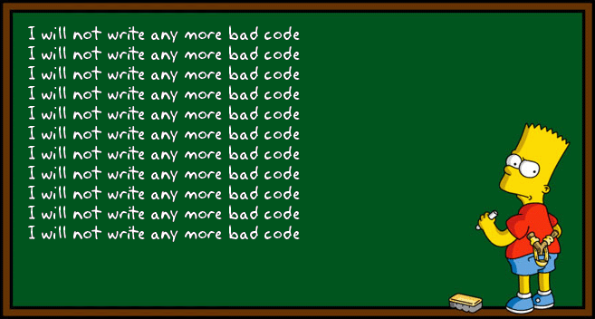
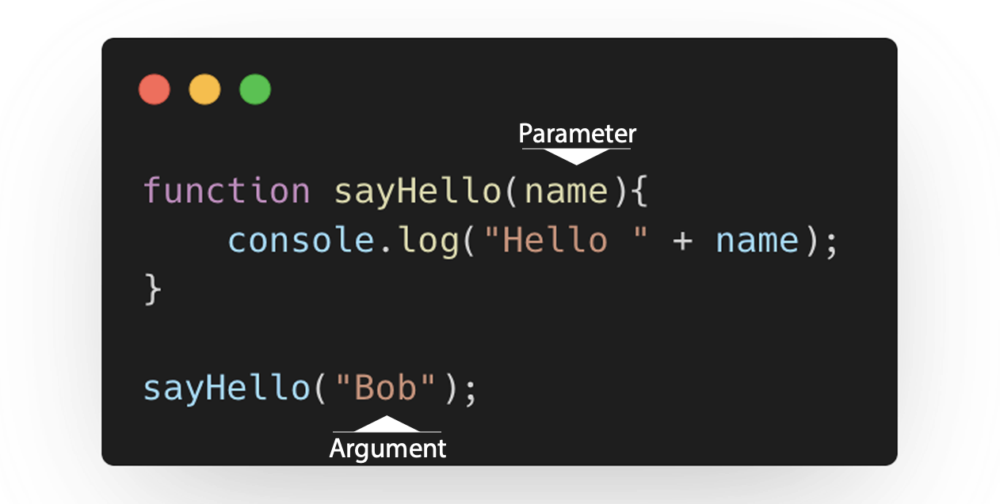

👩🏫 JS Basics 06 - Les fonctions
Objectifs
- Écrire et exécuter des fonctions en JS
- Éviter de te répéter (D.R.Y : Don't Repeat Yourself)
Pré-requis
Avoir validé les quêtes suivantes :
Introduction
Dans les quêtes précédentes, tu as découvert ce qu'est JavaScript et à quoi ressemble la syntaxe. Tu as également appris à créer des variables, manipuler différents types de données et écrire des conditions. Cette quête va introduire le (vaste) sujet des fonctions en Javascript.
Voici un des grands principes du développement :
ÉVITE DE TE RÉPÉTER (D.R.Y : Don't Repeat Yourself)

Cela signifie que tu ne devrais pas écrire un bout de code qui fait sensiblement la même chose à plusieurs endroits différents.
Une façon d'éviter de se répéter est de créer des fonctions. Ce sont des blocs de code que l'on peut exécuter autant de fois que l'on veut, sans avoir à réécrire les instructions systématiquement.
En fait, tu as déjà utilisé des fonctions. Rappelle-toi des quêtes précédentes avec console.log et prompt ! Maintenant, il est temps d'apprendre à créer tes propres fonctions.
C'est parti !
Sommaire
Créer une fonction
Pour déclarer une fonction, tu peux utiliser le mot clé function suivi du nom de la fonction.
function helloWorld (){
console.log("Hello,");
console.log("World!");
}
Pour appeler (exécuter/invoquer) la fonction, tu dois écrire son nom suivi par des parenthèses :
helloWorld();
https://replit.com/@LonardFlachs/BoilingYellowgreenLegacy
Clique sur le bouton "play" pour exécuter le code. Tu peux également modifier le code pour tester les choses par toi-même :)
Paramètres/Arguments d'une fonction
Une fonction peut accepter un ou plusieurs paramètres.
Les paramètres sont des données que la fonction va prendre en entrée. Ces données seront donc disponibles dans le contexte de la fonction afin que cette dernière puisse les manipuler.
Voici un exemple :

Dans cet exemple, on a créé une fonction nommée sayHello qui accepte une donnée nommée name en paramètre.
Tu peux assigner une valeur à un paramètre entre les parenthèses quand tu appelles la fonction.
Tu dois différencier le paramètre (la variable name) et l'argument (la valeur "Bob").
Tu es libre de donner le nom que tu souhaites au paramètre : name, firstName ou quelque chose d'autre.
Attention : Fais tout de même en sorte que ce nom soit suffisamment explicite pour que toi et les autres compreniez directement ce que représente la donnée.
🔬 Fais une expérience
Voici maintenant un exemple d'une fonction qui accepte plusieurs paramètres :
https://repl.it/@LonardFlachs/SingleSpatialBlogclient
Clique sur le bouton "play" pour exécuter le code. Tu dois également modifier le code pour tester les choses par toi-même :)
Essaie d'appeler la fonction plusieurs fois avec des paramètres différents pour voir ce qu'il se passe.
Paramètre par défaut
Tu peux définir des valeurs par défaut pour les paramètres de tes fonctions.
De cette façon, si aucun argument n'est donné à la fonction lors de son appel, une valeur par défaut sera utilisée. C'est un bon moyen de se protéger des erreurs.
function sayHello(name = "World") {
console.log(`Hello, ${name}!`);
}
sayHello();
// Hello, World!
sayHello("Bob");
// Hello, Bob!
Return
Tu viens de voir que les paramètres d'une fonction représentent ses entrées. Mais une fonction peut également produire une sortie qu'on appelle valeur de retour.
https://repl.it/@LonardFlachs/YellowishMeanLocations
Clique sur le bouton "play" pour exécuter le code. Tu peux également modifier le code pour tester les choses par toi-même :)
Dans ce code, on a créé une fonction pour calculer la somme de deux nombres.
Cette dernière accepte en paramètres les nombres à additionner : a et b.
La somme a + b est renvoyée à l'endroit où on a appelé la fonction grâce au mot-clé return.
Maintenant, que se passe-t-il exactement à la ligne 4 ? On appelle la fonction sum avec les arguments 1 et 2.
Le code de la fonction est exécuté et renvoie la valeur 3 au code appelant à la ligne 4.
Une fois exécutée, l'interpréteur Javascript va substituer l'expression correspondante à l'appel de la fonction par sa valeur de retour une fois exécutée.
À ce moment là, tout se passe donc comme si on avait console.log(3) au lieu de console.log(sum(1, 2)).
Il n'est pas obligatoire de toujours spécifier une valeur de retour.
Si rien n'est spécifié, la fonction renverra undefined par défaut.
L'utilisation du mot-clé "return" stoppe immédiatement l'exécution de la fonction pour revenir au code appelant. Les lignes de code après un return ne seront donc jamais prises en compte.
function sum(a, b){
return a + b;
console.log(a + b); // This code will never be run
}
sum(1, 2);
Voyons maintenant un exemple un peu plus complexe :
https://repl.it/@LonardFlachs/StunningChiefButtons
Clique sur le bouton "play" pour exécuter le code. Tu peux également modifier le code pour tester les choses par toi-même :)
Dans ce code, tu vois une fonction login qui accepte deux paramètres : name (l'identifiant de l'utilisateur) et password (son mot de passe).
Cette fonction va retourner true ou bien false selon la validité des informations de connexion fournies en paramètres.
Pour tester la fonction, tu vois 2 variables userName et userPassword qui seront initialisées par l'utilisateur, via prompt.
Le code vérifie ensuite si la valeur de retour de la fonction login appelée avec les arguments userName et userPassword est true.
Si c'est le cas, on affiche "Welcome !", sinon on affiche "Wrong credentials...".
Portée (scope) / Contexte
En Javascript, dès que l'on écrit du code, le contexte est très important. Tu ne peux pas utiliser une variable déclarée dans une fonction en dehors de cette fonction.
function sayMyName() {
const name = "Pierre"
console.log(name)
// works fine within the context of the function
}
function sayMyFullName() {
const lastName = 'Gerard'
console.log(lastName + ' ' + name)
// wont work: name is declared in an other function
}
console.log(lastName + ' ' + name)
// wont work either: lastname and name only exists inside their functions
Par exemple, ici la variable name sera disponible uniquement dans le contexte de sayMyName, pas dans le contexte global.
La fonction s'exécutera donc dans son propre contexte et aura son propre espace mémoire.
Sachant tout cela, nous pouvons créer et appeler des fonctions dans nos projets, mais nous devons tenir compte du contexte.
Fonctions fléchées
Les fonctions fléchées sont une autre façon de créer des fonctions. Voici à quoi ressemble la syntaxe :
const myFunction = (arg1, arg2) => {
// Code goes here
};
🔬 Expérience
Transforme cette fonction en une fonction fléchée
https://codesandbox.io/s/bind-example-forked-fpty0?fontsize=14&hidenavigation=1&module=%2Fsrc%2Findex.js&theme=dark
Voir la solution
const sayHello = (name) => {
return `Hello, ${name}`;
};
console.log(sayHello("Bob"));
Lorsque tu utilises les fonctions fléchées, tu peux rendre le code encore plus court.
Si tu n'utilises pas les accolades après la flèche, alors ce qui sera après la flèche sera la valeur de retour (return) de la fonction.
function sum(a, b) {
return a + b
}
// equivalent to
const sum = (a, b) => { return a + b };
// also equivalent to
const sum = (a, b) => a + b;
Ressources
La section "fonction" de la documentation officielle MDN, une référence !
Un article super qui explique ce que sont les fonctions en Javascript
Une vidéo géniale sur les fonctions :
Ressources partagées sur cette quête
- Comprendre facilememnt les fonctions (déclarer, appeler) :)https://www.youtube.com/watch?v=QcJi-Tiie_s
- Toutes les bases du JS dont les fonctions très bien expliquées en 10min (à 1:23:27) https://www.youtube.com/watch?v=9OJLxDxyNg4
- Definitely to check out if you need to understand how JS workshttps://www.youtube.com/watch?v=JljG3Abdcuk&list=PLzyGb02PQ53l0Iy9tVMyYxTzl-0RRufzJ
- General information about template literals including string interpolationhttps://developer.mozilla.org/en-US/docs/Web/JavaScript/Reference/Template_literals#string_interpolation